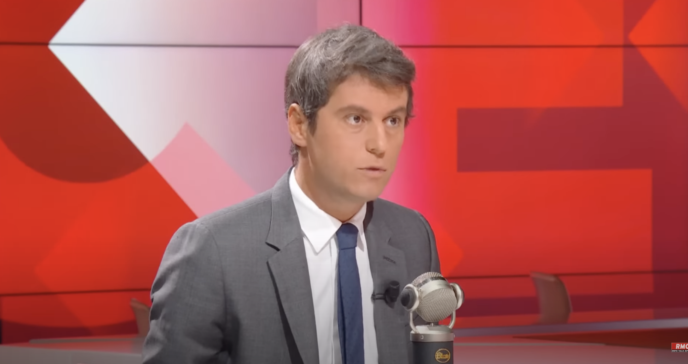
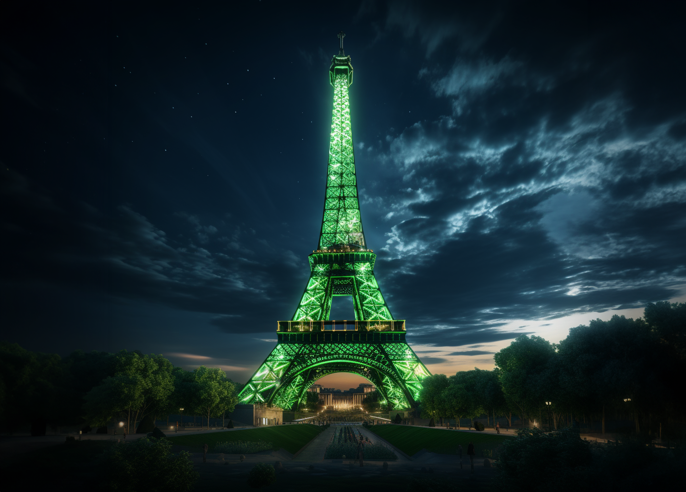

POLITIQUE - Gabriel Attal s’entraîne à rouler les R pour parler aux agriculteurs

Formation en « dialogue citadin-paysan » pour le gouvernement
Cette formation, dispensée par le cabinet de conseil "PECORE+", spécialisé dans le "dialogue citadin-paysan", aide Gabriel Attal au quotidien, afin d’adapter sa communication pour ne pas commettre d’impair (à un tarif de 5900 euros par jour – forfait de base).
Ainsi, depuis une semaine, le Premier ministre s’entraîne à rouler les R à Matignon et utiliser des expressions typiques du monde rural. L’ensemble de ses collaborateurs doit également se plier à l’exercice afin d’être en immersion totale : « Quand j’avions su qu’on nous demanderait de parrrler comme un péquenaud j’ai yoyoté de la touffe » commente Guillaume Jouven, conseiller en communication. « Mais c’est ben vrrrai » conclue-t-il amer.
Un document confidentiel que nous nous sommes procurés indique que Gabriel Attal a exigé de ses collaborateurs d’autres changements notables dans leurs habitudes au cours des prochains jours. Ce qui passera notamment par le port d’une tenue de type « parka Carrefour », de chaussures couvertes de terre et l’interdiction stricte de mettre du déodorant. Ces mesures permettront-elles de renouer enfin le dialogue avec le monde rural ? La question reste posée.
95% des Parisiens ne croient pas en la vie après le périphérique

La vie hors Paris : Mythe ou Réalité ?
“Pour moi la province c’est un truc qu’on se racontait gamins pour se faire flipper autour du feu ou à la rigueur quelque chose qu’on raconte aux enfants pour leur filer la frousse quand ils sont pas sages. Du style “finis tes haricots verts ou on t’emmène vivre à Gueugnon !” Mais de là à y croire vraiment c’est n’importe quoi” plaisante Pierre-Antoine, un parisien à qui nous avons posé la question alors qu’il disputait une partie de mölkky sur le canal de l’ourcq.
Si la croyance en une vie après le périphérique compte peu d’adeptes, de plus en plus de parisiens se disent cependant ouverts à la possibilité qu’il existe “d’autres formes d’intelligence quelque part en dehors de Paris”. “Peut-être bien qu’il existe ailleurs d’autres pokebowls, d’autres trottinettes électriques, d’autres monaco à 17 euros en terrasse, et d’autres formes de vie qui vapotent en parlant du prix de l’immobilier au mètre carré. Personnellement j’ai envie d’y croire, mais que voulez-vous, je suis une rêveuse !” témoigne Louise, une passante qui a accepté de répondre à nos questions alors qu’elle faisait la queue devant un foodtruck pour acheter un burger végé à 25 euros.
Pour soutenir la lutte contre le gaspillage énergétique, la Tour Eiffel sera illuminée en vert pendant 7 jours

Paris s'illumine pour l'écologie
“Le gaspillage énergétique est un problème qui mérite qu’on prenne des mesures fortes” a déclaré ce matin Anne Hidalgo lors d’une conférence de presse en tapant du poing sur la table. “Voilà pourquoi nous allons illuminer la Tour Eiffel aux couleurs de l’écologie pendant minimum SEPT jours, mais également le Trocadéro, le Pont des Arts, la Pyramide du Louvre, le Sacré Cœur, toutes les terrasses, toutes les péniches, et l’intégralité de la Tour Montparnasse !” conclut-elle sous les applaudissements nourris des journalistes.
Afin de renforcer ce symbole particulièrement fort, plusieurs dizaines de transformateurs seront montés en série afin d’augmenter considérablement l’intensité des ampoules. 300 projecteurs seront également installés sur le champ de Mars pour projeter une lumière vert fluo sur toute la structure métallique de la tour et des enceintes de 2 fois 4000 watts diffuseront en boucle tous les meilleurs slogans des dernières marches pour le climat tels que “La banquise, je trouve ça coule”, “-2 degrés ou de force” ou encore “Si on n’a plus de glaciers, j’ai les boules”. Enfin, le 7ème jour, la patrouille de France devrait écrire “Make Our Planet Great Again“ dans le ciel avec la fumée des moteurs afin de faire rayonner le symbole à l’international.
Ce n’est pas la première fois que la mairie de Paris décide de changer la couleur de la Tour Eiffel pour soutenir une cause puisqu’elle avait déjà été illuminée en rouge en soutien à la lutte contre la corrida, en bleu en soutien à la lutte contre la Courmayeur et en gris en soutien à la lutte contre le daltonisme.